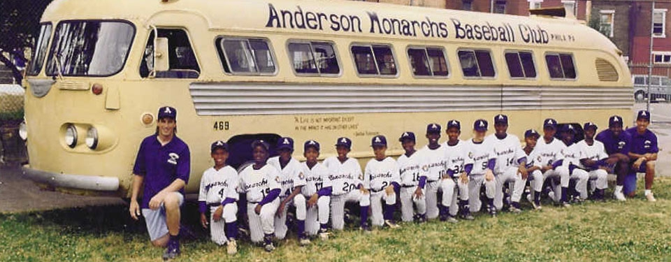
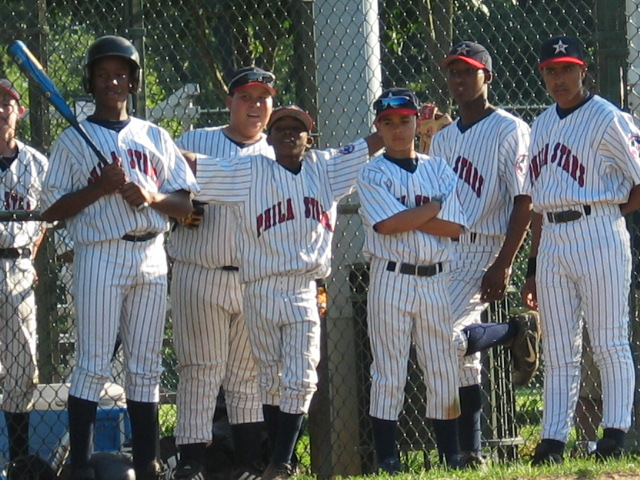
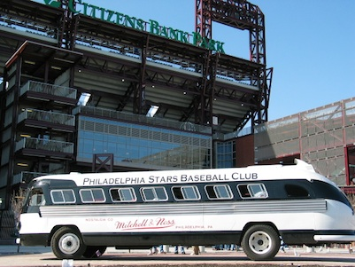

In the spring of 1995, 15 of the most talented 8 year-old boys from the Jackie Robinson League were chosen to represent the PYO in the Devlin Baseball League, the top travel league in the Philadelphia area. They were named the Anderson Monarchs, after the Kansas City Monarchs, the legendary Negro League team for which Jackie Robinson played before breaking Major League Baseball’s color barrier in 1947.
As the first and only African American team in the Devlin League, the Monarchs were the Jackie Robinsons of their time, facing frequent prejudice with pride and determination and, through their hard work and disciplined approach to the game, shattering stereotypes and breaking down barriers across the city and suburbs. Since then, the Monarchs teams have developed the reputation as one of the finest clubs in the area, culminating with six city championships in recent years.
 1995In 1997, to mark the 50th anniversary of Jackie Robinson breaking the “color line” in Major League Baseball, the 11 year-old Monarchs boarded an authentic 1947 Flxible Clipper bus and embarked on a 13-day, 3300-mile journey across America, experiencing life on the road just as the barnstorming Negro League teams from the first half of the 20th century had.
Along the way, the Monarchs played baseball with kids from 10 different cities, visited many historic sites such as Jackie Robinson’s grave site, the Major League All-Star game in Cleveland, Tiger Stadium, Wrigley Field, the Field of Dreams in Iowa, the Louisville Slugger Museum, the Baseball Hall of Fame in Cooperstown, and the Negro Leagues Baseball Museum in Kansas City where they met the legendary Buck O’Neill.
The trip received much attention from the local and national media, including two articles in the New York Times, as well as features on This Week in Baseball and the Sports Illustrated for Kids TV Show.
1997In the fall of 1998, the Philadelphia Stars Baseball Club was formed. The team of 8 year-olds consisted of five Black, five White, and five Latino players from all over the Philadelphia area. The purpose was to create an environment where the kids could be exposed to other races and cultures while sharing and working at their common interest – baseball. The goal was to enable the kids to form their own opinions about other cultures and races based on personal experience, rather than on hearsay and common stereotypes.
The original team got together every week throughout the fall and winter, practicing baseball as well as participating in other activities and discussions. Within the first month it was obvious that the “experiment” was going to be a success, as the invisible barriers came crashing down and with the players forming a bond that would grow stronger each year. Today, at age 21, those friendships are still going strong with most of the original group enrolled in colleges across the country. The original team and the current 15 year-old Stars, have captured three Delaware Valley Baseball League championships, competing against some of the best suburban teams in the area.
When the new MLB Urban Youth Academy opens, our tournament teams from each age group will compete under the "Philadelphia Stars" name. In the spring and summer, while still playing with their neighborhood club teams, the Stars will participate in local, regional, and national tournaments, including a weeklong tournament in Cooperstown, NY, where they'll compete against over 100 teams from around the country.
 1998In the summer of 2004, to celebrate the legacy of Jackie Robinson and the Negro Leaguers, the Philadelphia Stars boarded the same 1947 bus used by the Anderson Monarchs in 1997 (and purchased for them by the Mitchell & Ness Nostalgia Company) and headed out on a 20-day, 16-city, 4500-mile cross country tour. In preparation for their trip, the Stars got together every Friday night, for 5 months, to study the history of baseball and the civil rights movement in our country.
Along the way the Stars visited many of the same attractions as the Monarchs before them but added a southern leg which featured a visit to the Babe Ruth Museum in Baltimore, a tour of Duke University, and an incredibly moving visit to the Dr. Martin Luther King Memorial in Atlanta. After spending a full morning with Buck O’Neill at the Negro Leagues Baseball Museum in Kansas City, the Stars headed to Omaha where they attended the College World Series at historic Rosenblatt Stadium.
 2004In 2012 our Anderson Monarchs paid tribute to Jackie Robinson and Negro Leagues baseball by boarding our authentic 1947 Flxible Clipper bus and barnstorming their way to the Negro Leagues Baseball Museum in Kansas City. Along the route of their 22-day, 4000-mile journey, the Monarchs played games against local youth teams, visited historic sites and, more importantly, raised awareness of this very important chapter in American history and the contributions of the great Negro League players who paved the way for Jackie’s historic breakthrough.
2012